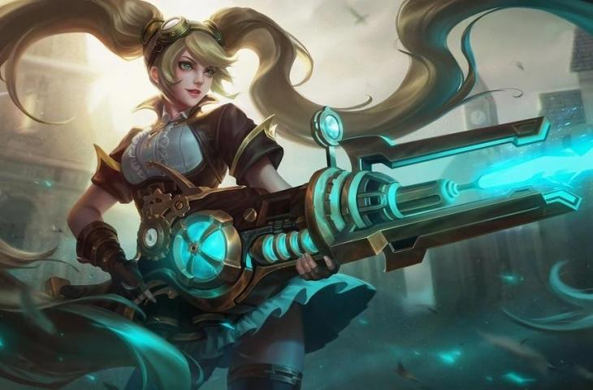

Layla

Selain memiliki kemampuan memimpin tim yang baik, Layla juga memiliki wajah yang cantik. Layla juga memiliki senjata Malefic Gunner dari ayahnya untuk membunuh musuh dari jarak jauh. Layla yang dilhadirkan sejak 2016 ini juga sebagai hero Marksman yang diandalkan untuk Gold Lane.
5 Tips GG Menggunakan Hero Layla
1. Pahami dulu 4 skill yang dimiliki oleh hero Layla

2. Gunakan build tersakit ini agar overpowered

Build adalah salah satu hal yang paling penting dalam memainkan sebuah hero, dengan menggunakan susunan build yang tepat maka performa hero juga akan maksimal dan menjadi mematikan. Berikut ini adalah build tersakit hero Layla yang bisa kamu ikuti: Demon Hunter Sword, Swift Boots, Windtalker, Berserker's Fury, Malefic Roar dan Rose Gold Meteor. Dengan menggunakan susunan build di atas maka Layla akan overpowered dan mampu meng-carry tim, buruan coba!
3. Lane terbaik untuk hero Layla

Lane terbaik untuk hero Layla adalah di gold lane, hal ini karena di gold lane Layla akan mendapatkan tambahan gold yang lebih tinggi saat membunuh Minion sehingga membuat Layla menjadi cepat kaya. Saat melakukan farming Layla tidak boleh terlalu maju ke depan, pastikan posisi kamu aman dari serangan lawan sebab Layla tidak memiliki skill blink. Lakukan tugasmu di gold lane hingga turret lawan hancur, setelah itu barulah Layla bisa roaming untuk membantu tim yang sedang war.
4. Tips bermain hero Layla di early dan late game

Layla termasuk hero yang sulit untuk dikuasai karena ia sama sekali tidak memiliki skill blink sehingga membuatnya mudah sekali untuk di-lock. Saat di early game fokus permainan Layla adalah farming yaitu dengan membersihkan Minion, membunuh Creep, membunuh Tutle dan menghancurkan turret lawan. Saat di early game kamu tidak boleh melakukan roaming, open map dan juga open war
5. Tips saat war

Tips terakhir yaitu saat war, apa sih yang harus dilakukan oleh Layla? Ketika kamu sedang war, tips pertama yang harus diperhatikan adalah positioning atau penempatan posisi, carilah posisi paling aman dari serangan hero lawan contohnya: Di belakangan hero Tank atau di dalam turret. Tips kedua, pastikan kamu selalu menerang target yang memiliki durabilitas paling rendah terlebih dahulu seperti: Hero Mage, Marksman dan Assassin. Tips terakhir, maksimalkan skill satu Layla untuk mengejar lawan, melarikan diri dan menghindari serangan lawan